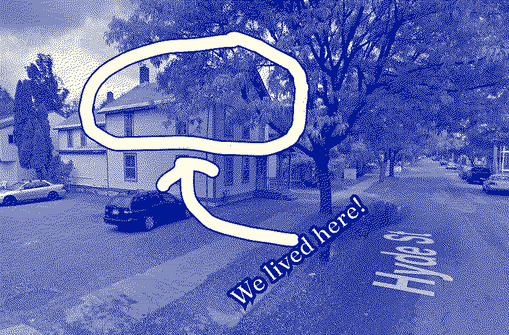
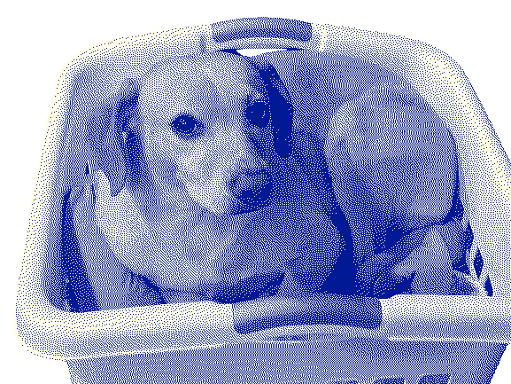
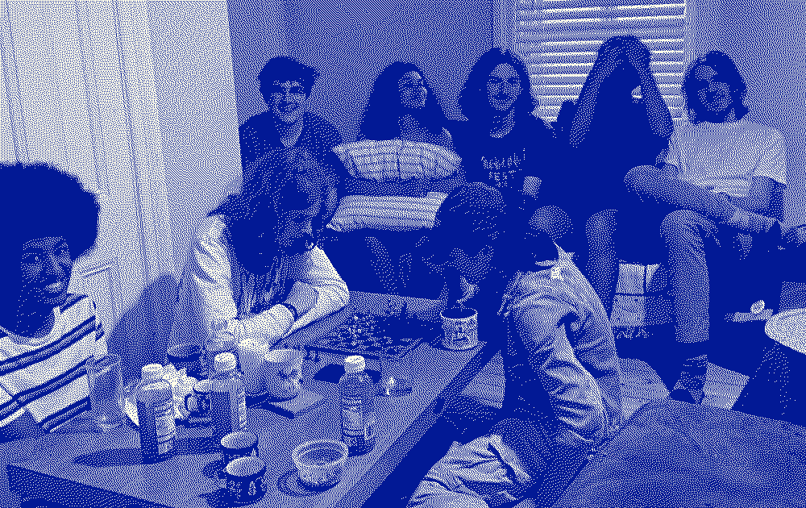

Journeys @
(2023-2024)
Home / Moving-To-VT-For-Gap-Year+Hyde-St
We drove from Angel Hacks to Vermont, and initially we lived out of Steve! We lived there for a few days because our lease began on June 1st. Steve was wonderful. I think we were the first people to stay in Steve. It's a beautiful Hacker Home that Hack Club has right next to Tracy.
Here's an AMAZING VIDEO that Savina & others from Hack Club this summer made that showcases the inside of Steve & them making a group meal together: https://youtu.be/jduhxNf6Rfg?si=zet990U6D-rGX49R
Vermont is a really magical place. We moved into our apartment on Hyde St. It was our first apartment.

Dieter created a video that compiled a bunch of clips of the inside of our home: https://youtu.be/UTskpB5uRRw
Living on my own was really great. I learned not just cook for myself, but I also learned to cook for all of my friends. We had group dinners all the time where Fayd, JC, Dev, Nila, etc would come & devour a bunch of food. I think I learned a love of cooking from my mom. I would not say I am nearly as good at it as she is though! Our home was just a 5 minute walk from the two other Hacker Houses where all the other gap years lived. I even had a couple of my fellow gap years visit my family in South Carolina! (JC & Fayd went down at different times to see what life was like in SC for a week) (they met my dog, Bodhi)

The biggest thing I am leaving Hack Club with is the friendships that I made with my fellow gap years. We helped each other figure out how to live on our own & we needed to rely on each other because for everyone (other than Nila), we had NO FRIENDS in Vermont other than each other, so we grew super close. :)
